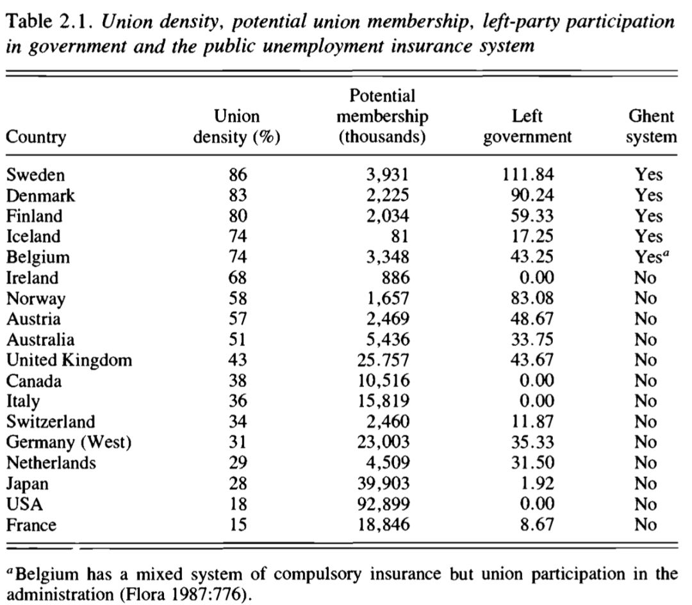
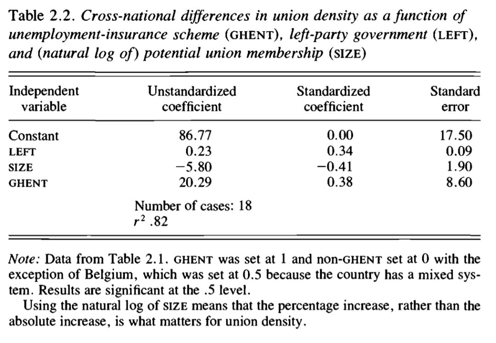
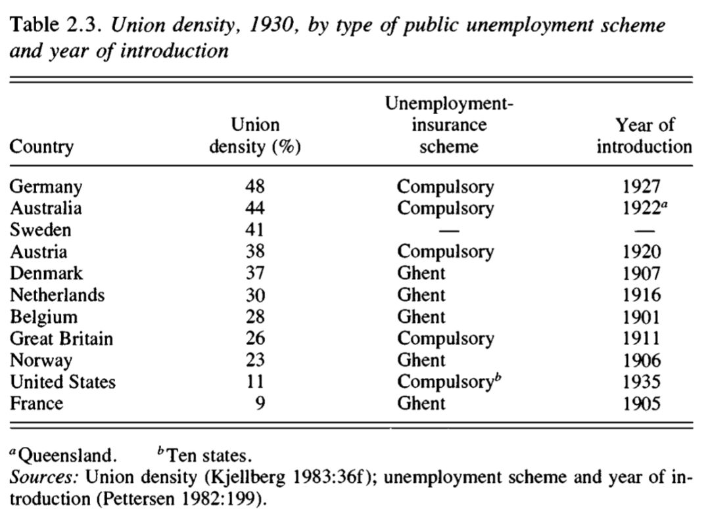
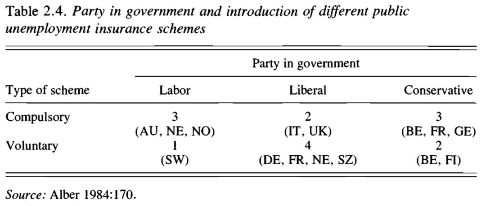

收录于合集
#比较政治学 121 个
#国家建构与国家发展 70 个
文献来源： Bo Rothstein, “Labor-market institutions and working-class strength”, in Sven Steinmo, Kathleen Thelen, and Frank Longstreth eds. Structuring Politics: Historical Institutionalism in Comparative Politics , Cambridge University Press, 1992. pp 33-56.
**作者简介 ：**Bo Rothstein，瑞典政治学家，曾任教于牛津大学布拉瓦尼克政府学院，现担任哥德堡大学政治科学系奥古斯特·罗斯讲席教授。研究方向为政府质量、政府腐败和政治制度的建立和维持。
个人主页：https://www.gu.se/english/about_the_university/staff/?languageId=100001&userId=xrotbo#tabContentAnchor1
**
**
前言
本文的中心问题是，为什么一些工人阶级比其他阶层更有组织性?最新的数据显示，在这些国家中，工会化程度从法国的15%到瑞典的86%(见表2.1)。这一现象显示了近年来西方资本主义国家之间不断加大的区别。在工业化的西方国家中，几乎没有任何其他的政治变量有如此的差异。作者在文中用工会化的程度来衡量工人阶级的组织性，即工人阶级的力量。因为作者认为按照马克思主义的理论，工会的形式是工人阶级组织化的首要形式，并且是工人阶级力量其它形式的基础。

工人阶级组织化力量的重要性源于工会力量和福利国家政策发展之间的正相关关系。除了少数例外，工人阶级的组织越强，福利国家越能得到发展。但是，这种相关性自身并不能说明社会政策和工人阶级形成过程的因果关系。
那么，这种工人加入工会倾向的巨大差异如何能够被解释？按照传统的马克思主义的解释，各国之间的差异是由于生产力的不同水平导致的。但为何同为发达国家的瑞典和法国，前者工人的组织性是后者的六倍？工业化的时间和步伐解释不了工会化中的变量，而像文化因素和社会规范因素也提供不了令人信服的观点。因为根据社会规范理论，工会成员一般会遵守统一的规范，但我们依然需要知道为什么一些工人阶层比另外一些更倾向于遵守集体行动的规范。例如比利时和芬兰两国在文化和社会因素方面相似，但是工会化程度的差别却很大（分别为74%和29%）。因此，我们需要探寻在社会经济结构和社会规范之间存在的一些独立变量。
一、制度因素和工人阶层的组织力量
本文的理论的出发点是工会化程度的差异在很大程度上可以被政治制度的历史变迁所解释。制度很重要的观点古已有之，但“新制度主义”是个新视野。与马克思主义社会经济结构分析路径相反，新制度主义认为，政治制度是一种能被理性的、有明确目标的政治能动者创设的存在。但是，由于政治制度存在“粘性”，它又可以被视作为能动者在追求其目标时的一种环境限制，即政治结构。这引发我们思考社会科学和历史中的一个基本问题，即结构是否是造成社会变迁的主要变量，如果制度能够提供一种环境，遵守的人能够做，不遵守的人不能做，那么我们就需要去考察这些制度是处于什么环境下被创设的。因为如果政治能动者能够设计或建构制度，那么他们就会在未来的政治博弈中取得优势。
如果我们经验性地认定在历史上存在这种制度创设的时刻，那么这种对政治制度的创设和消亡的分析就能够作为“创造历史的人”和他们所处的“环境”之间的桥梁。因此本文的理论目标不在于强调制度在型塑政治行为时是重要的，而在于找出一个明确的制度创设的时刻，在这一时刻，制度被创设者用于未来权力的博弈。
解释公共政策和工人阶级形成之间关系的文献汗牛充栋，但是诸多文献存在两个问题：第一，政治制度和公共政策的数量是非常之多的，我们需要一种理论来区分出那些在影响工人阶级的形成上更具决定性的制度。第二，我们需要一个理论去明确地指出当能动者在选择的时候，政治制度以哪种运行逻辑去改变他们的偏好。这就需要一种不排斥方法论上的个人主义的、存在“微观基础”的制度分析，这样一种制度分析的路径正是理性选择和历史路径分析间的桥梁。
作为解决“哪种政治制度是重要的”这一问题的答案，作者认为，社会阶层的组织化力量是以它在生产关系中所处的地位为基础的。后者不单是社会生产力的反映，而是有它们自身的解释力的。因为，即使在每个资本主义社会里，生产关系都包含了资本家和卷入不平等经济交换关系的工人之间的关系，但事实是在生产力发展阶段大致相同的不同资本主义社会里，生产关系中的工人和资本家的力量也是大不相同。一些国家能够阻止其大量的工人去对抗资本家而另外一些国家则不可以。
因此，如果我们想从马克思主义的立场上解释这种差异，我们应该聚焦于那些直接影响生产关系的政治制度。在大多数国家中，这些制度一般是广义上的劳动力市场制度，包括将劳工组织起来并采取集体行动对抗资本家的规则、失业政策和培训政策。这意味着马克思主义的社会分析从对经济的分析转向了对政治和组织的分析，这意味着我们应该去关注组织化的阶级利益是如何在型塑和创造劳动力市场的政治制度时使用权力资源的。马克思主义者认为是由经济结构决定的，因为这种结构不是被刻意定义的，而是由经济和技术的发展的进步逻辑导致的，但这种结构决定论的解释是有问题的。另外，理性选择理论只是将制度看作是进化过程导致的，而不是被人为创设的。事实上，诸如官僚制度、军队和复杂的立法机构等政治制度也可以像经济结构一样被看作是对能动者的结构限制的。并且如果那些或多或少由人为创立的政治制度存在于影响阶级形成和阶级组织化的劳工市场制度中，那么假设就是成立的。
二、解释工会
奥尔森的集体行动理论表明，出于个人理性，工人将不会加入工会，因为有相关利益的工会提供的是公共产品。理性的工人将会选择“搭便车”，即工人能够在不产生花费的情况下从组织获得利益。但从既成事实上看，工人已经加入了工会，有时甚至是相当大范围的，对此奥尔森解释说，工会能够创造来自他们集体产品之外的选择性激励。如果奥尔森是正确的，那么他需要解决两个问题。第一，为什么是一些国家的工会在创造选择性激励方面比其他的国家更加成功？因为在类似的国家中，工人组织工会化的程度呈现出相当大的不同。这就使得这种选择性激励的使用范围仅仅局限于国家内部。第二，即使创造这些激励的理性利益能起作用，并且假设理性选择理论能够解释所有的政治行为，那为什么会出现一些国家的工人阶级比另外一些国家的工人更加理性的现象呢？
针对奥尔森这一命题的批判很多，其中一种批判认为，奥尔森忽略了劳动力作为一种商品的独特性，因为它与个体持有者是分不开的。因此，不同于资本家的公司，工会有充分的理由将其成员的个人福利考虑进去。因此，当劳动力市场上的供求关系趋向饱和时，工会也不能因为需要承担救济的花费就放弃工人，因为工会拥有的主要权力资源是他们对劳动力供应的控制。如果工会在劳动力需求下降的时候放弃工人，那么缺少谋生手段的工人将不得不找一份比工会出价低的工作。这会导致资本家能够以低于工会划定的价格获得劳动力，工会也就失去了这种控制劳动力的供给的能力。
因此，如果前面的假设成立，那我们对重要制度的探索就应该指向那些会影响工会保持对劳动力供应控制能力的政治制度和政策。这里有几种分析方法，其中最重要的是公共失业保险政策的制度化。公共失业保险政策是政府干预劳动力市场的一种直接方式，它往往通过提供部分市场上暂时不需要的劳动力来实现。失业保险在这一问题上比其他的政策，诸如医疗、残疾和老年保险，更重要，因为任何在后三种环境下的工人都不可能获得低工资。因此，与失业政策和生产关系的直接联系相比，社会政策在生产关系中往往是一种间接的影响。
许多关于劳动关系的分析至今都在试图解释影响工会化程度的变量，但奇怪的是，政府劳动力市场制度的区别却没有被纳入考虑。此外，在这些分析中，存在两个问题。第一，根据研究，国家劳动力的规模，与工会化程度有强烈的负相关关系。但是在劳动力市场有着相当数量劳动者的国家之间，工会化的程度大为不同（例如比利时和芬兰）。因此，劳动力的规模可以被一些工人阶级转变为组织程度问题，而不是主要变量。第二，在解释国家工会化程度的差异上，政府的政治色彩（左右翼立场）是重要的。但问题在于，即使我们接受这两个变量相互依赖的假设，我们也需要知道这种关系是如何运作的，也就是说我们需要知道左翼政党政府促进工会化的微观基础，即政府劳动力市场制度是否改变了工人加入工会时的偏好。
作者认为，工人是否加入工会是一个自由的选择，但决策时的理性可能会被政府的劳动力市场制度严重地影响。如果仅仅使用一些理性选择或者博弈论的方法，我们将不能理解国家间在工业化程度上的不同，因为我们需要知道在初始点偏好是如何建立的？集体行动的规则是由谁？它是通过何种方式建立的。
为什么不同资本主义国家的工人在集体行动时有如此不同的利益？很明显，如果不去分析工人是否加入工会这一偏好的形成过程，这个问题将不能解决。这里就需要制度分析了，因为与理性选择和博弈论相反，制度能够在很大程度上去解释偏好的形成，偏好的顺序和行为者的数量和资源。作者认为，对工会化程度不同的解释在很大程度上取决于国家公共失业政策系统运行逻辑的变化。
三、公共失业政策的比较
二战前，所有主要的西方工业化国家都引进了某种形式的公共失业政策系统。这些系统有两种不同的制度形式：（1）通过政府机构实施的强制性系统和（2）自愿的，但是由工会或者工会主导的基金运作的系统。后者因为是1901年在比利时的根特建立，因此称为根特系统（Ghent system）
在根特系统中，失业保险是由工会或者工会运行的失业基金负责分发，由此，那些实施失业计划的官员获得了这种制度权力。因此，这种保险政策往往是和工会成员绑在一起的（所有的工会成员必须是保险系统的成员），但是不成为工会成员而享受保险计划也是可能的。在强制性系统中，政府官员握有上述的制度权力，并且工会成员和失业保险的权利没有关系。正如上文所述，工会掌握的主要权力就是对劳动力供应的控制，如果工会掌握了发放失业保险的权力，那么工会就能加强对劳动力供应的控制，进而在更大程度上提高工人的组织化程度。

如表2.1所示，工会化程度最高的五个国家都有着相同的公共失业保险系统，即根特系统，但是其他国家都是强制性系统。因此政府的劳动力市场的制度权力在决定工会密度（工人阶级力量）的时候是很重要的。这是因为拥有根特系统：（1）工会能够使得非工会成员在获得保险时变得困难；（2）工会的控制，即工会对什么才是一个适合的工作的决定权；（3）通过控制计划，工会能够增加它们对于劳动力供应的控制。

表2.2表明，这三个变量都有一个关于相同标准大小的独立解释效果。他们总共解释了82%的工会密度变化。
对于衡量政府中左翼势力参与程度和劳动力规模的变量，根特系统在工会密度上的差异约为20%。考虑到表2.1的“可视化”结果，因此，如果没有根特系统，就可能有一个相当强大的工会运动。但是，这种统计分析并不能帮助我们理解具体的因果关系。因为也有可能是劳工运动已经非常强大才引进了根特系统。为了解决这个问题，我们需要采用静态比较到历时性比较分析。
四、历史比较
这里的第一个问题是，当系统建立时，工会力量和失业保险系统是否存在相关关系。如果存在的话，那有关制度权力在劳动力市场制度上的重要性的假设就要重新考虑了。表2.3的数据显示，在20世纪30年代，工会力量和失业保险系统的类型之间没有明显的相关关系，四个拥有最高水平工会化的国家要么是强制性系统，要么完全没有公共保险。这些有强制性系统国家的工会化密度平均值轻微地高过那些建立起根特系统的国家（33%比25%），因此可以说那些引进了工会控制的公共失业保险系统的国家没有特别剧烈的工人运动。再者，根特系统对工会化密度的影响似乎明显推迟了。但是，问题是谁引进了什么类型的系统？不同的劳工运动是否有必要的政治力量和策略将根特系统制度化？任何形式的社会保险的建立背后的政治力量都是不同的。一般来说，自愿式的系统往往是被自由党政府提倡，而工党政府往往引进强制性计划（除瑞典外）。这可能的原因就在于个人责任和自主组织在自由主义意识形态中有很深的根基，而社会保险作为一种公民权利则在社会主义意识形态中得到强烈的支持。或许意识形态有时超过了策略的算计而处于首要位置。

尽管文中没有对这些国家为什么将现有系统制度化的详细描述，但是法国早在1905年就引进了根特系统，但受工团主义者和工人运动的阻碍迟迟没有实现，挪威的情况亦是如此，而荷兰则是工党政府上台后用强制性系统代替了自愿性系统。另一方面，在英国，自由党政府在1911年引进了世界上第一个强制性系统。在丹麦，在工人运动的强烈要求下，自由党政府在1907年引进了根特系统。在表2-3的发达国家中，最初工会对失业保险系统结构差异的反应是多种多样的。一些工人运动想引进根特系统却没能引进，其他工人运动则没有看到根特系统的战略优势而在失业保险系统建立之初对根特系统嗤之以鼻。如前文所述，按照意识形态的谱系，工党应该是引进强制性系统，但表2.4显示，有一个国家的工党确实引进了根特系统，那就是1934年的瑞典。因此，如果要证明在政治制度设计的过程中存在一种战略行为，那么瑞典是值得考察的。

五、瑞典的案例
**
**
瑞典的工会化虽然来得晚但进展迅速。1918年，瑞典最原始的失业保险政策是非常独特的，它将失业者送往条件艰苦的救济营劳动，经过一系列严格的个人测试，而且工资水平远低于工会要求的最低工资，因此失业保险政策对工会的劳动力控制构成了极大的威胁。
在20世纪20年代，用新的失业保险政策代替已有的政策的要求成了那一时期工人运动的主要内容。1934年前，由于资产阶级政党的阻碍，政府委员会至少四次有关失业保险系统的报告和详细计划都未能得到议会批准。后来，前者的阵线发生了分裂，两个自由党中的一个党想要引进公共失业保险。在1926到1928年以及1930到1932年执政的自由党考虑到引进强制性系统的花费太高和行政过程过于复杂，始终处于一种犹豫的态度，而根特系统就没有这些缺点，但自由党认为这样的系统将会加强工人运动并损害它们的利益。社会民主党一开始就支持引进根特系统，但工会受大萧条时期攀升的失业率和旧有的失业救济系统的冲击，给社会民主党施压，只要能引进新的救济系统而不管是自愿的还是强制的。但由于当政的自由党一方面认为失业救济系统的引进只能在“正常”时期（20世纪30年代早期明显不是），另一方面吸收英国和德国引进强制性系统的教训而不打算引进新的系统。
在1932年的选举中，社会民主党胜选后组成了一个少数党政府。因此，如果要引进失业保险系统的话，它必须得到至少一个资产阶级政党的支持，但唯一可能支持政府这项政策的自由党却是倾向于建立强制性系统。因此，1934年，社会民主党为了与自由党达成妥协而牺牲了原有计划中的一大部分重要内容，但工会却取得失业基金的管理权并将这一系统制度化了。在这一系列过程的斗争过程中，社会民主党的社会事务部部长古斯塔夫·莫尔始终承担着制度设计者的职责。早在1926年，莫尔就强调了根特系统对于工会运动的重要性，1930年，莫尔劝说工会运动的领导人引进根特系统，因为它会“将工人组织进工会”。而社会民主党在1934年的妥协表明，莫尔为了实现他的长期利益，政策的实质内容被用来交换制度的设计。
1934年建立的系统并没有在大萧条中发挥什么作用，但是莫尔在1934年的计划终于在1941年得到了实现，自此后，根特系统得到稳固。即使资产阶级政党在1976年到1982年试图改变，但此时不仅是蓝领工人，就连白领也开始保卫这一制度，加之选举的原因，资产阶级政党不能强烈抵制工会的要求。因此，从瑞典的案例中可以看出，根特系统在某种程度上是具有自我强化特性的，它倾向于保护这一制度中的积极力量。
六、总结和结论
作者总结道：本文理论的目的在于展示，制度分析在政治科学中能够作为结构和能动者之间的桥梁。关于制度分析方面，本文认为有四个重要方面：
第一，要理解政治制度的重要性，制度理论是不够的。作者在文中解释工人阶级的组织力量时表现出了马克思主义和制度理论的结合。前者已被用来确定重要的制度，后者用来解释它们如何以及为什么会产生差异。
第二，统计分析表明，政府劳动力市场政策的制度化水平对于解释西方工业化国家内部工人阶级组织力量的变化是很重要的。
第三，有组织的阶级权力不仅源于社会经济因素，也来自社会阶层此时能够赋予政治制度的权力。因此，政治制度与阶级形成之间必然存在着辩证关系。
最后，在瑞典的案例中，已经证明了根特系统的建立是经过深思熟虑的，并且它已经得到了它的创建者所期望的结果。因此，政治制度当然是决定政治行为的来源，但是，政治人物不能被认为完全是一种结构和制度上的“装饰”。


政观
感谢您支持学术公益
微信扫一扫赞赏作者 __赞赏
已喜欢，对作者说句悄悄话
取消 __
发送给作者
发送
最多40字，当前共字
上一页 1/3 下一页
长按二维码向我转账
感谢您支持学术公益
受苹果公司新规定影响，微信 iOS 版的赞赏功能被关闭，可通过二维码转账支持公众号。